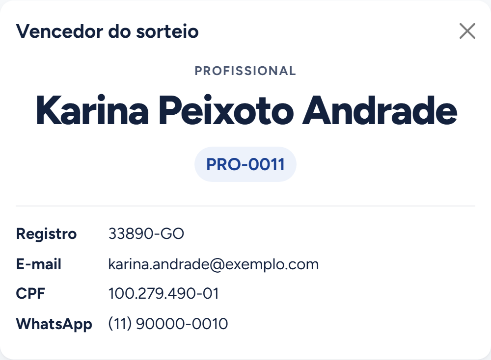

Timer de estações
Cronômetros sincronizados em tempo real para avaliações em rodízio, com controle centralizado e um cronômetro dedicado para cada sala.
- Tecnologias
- Python
- Flask
- Socket.IO
- React
- Ano
- 2026
O que o sistema precisava resolver
- Centralizar o controle de tempo de todas as salas em um único lugar.
- Permitir que cada sala acompanhasse seu próprio tempo.
- Garantir o funcionamento em rede local.
- E manter o tempo mesmo quando algum tablet fosse desconectado.
O que o participante vê
A tela inteira muda de cor conforme a fase, para ser lida do outro lado da sala.
Decisões técnicas
O que mantém todas as salas no mesmo segundo.
- Sincronia
O servidor é a única fonte da verdade
Fechar ou trocar um tablet não mexe no cronômetro.
Todo o tempo é contado no notebook; o painel e os tablets só exibem o estado que recebem.
- Rede
Reconexão sem intervenção
Se a rede cair, o tablet se corrige sozinho quando ela volta.
A cada conexão o tablet recebe o estado atual. Enquanto está sem rede, avisa que o tempo pode estar parado.
- Compatibilidade
Feito para os tablets que existiam
Roda nos tablets antigos, sem depender da internet.
O build gera uma versão compatível com Android 5 e Chrome 49. Nada vem de fora: sem CDN nem fontes externas, e os sons são sintetizados no navegador.
Ver mais 4 decisões
- Canais
Cada tablet recebe só a sua sala
O painel vê todas as salas; cada tablet, só a sua.
O painel entra num canal do Socket.IO que recebe a lista completa, e cada tablet entra no canal da sua sala, com o próprio cronômetro e os eventos que disparam os sons.
- Concorrência
Uma thread de relógio, com travas em ordem fixa
Todas as salas andam no mesmo relógio, sem o servidor travar.
Uma única thread decrementa os cronômetros a cada segundo e se encerra quando nenhum está rodando. As mudanças de estado acontecem sob uma trava, e as duas travas são sempre adquiridas na mesma ordem, para não haver impasse.
- Painel
O painel avisa antes do problema
Uma sala rodando sem tablet fica em destaque.
Cada cartão mostra se o tablet da sala está conectado. As ações que o servidor recusaria, como excluir uma sala em andamento, nem aparecem.
- Implantação
Ligar o notebook é o bastante
No dia da avaliação, ninguém precisa abrir um terminal.
O servidor sobe sozinho no login do Windows, em janela oculta, e um atalho abre o painel. O notebook só precisa de Python: a interface já vai compilada no repositório.
Quer saber mais sobre este projeto?
Posso mostrar o painel e os tablets funcionando e explicar qualquer uma dessas decisões.
rbrandaodev@gmail.com

Próximo projeto: Sorteio de evento